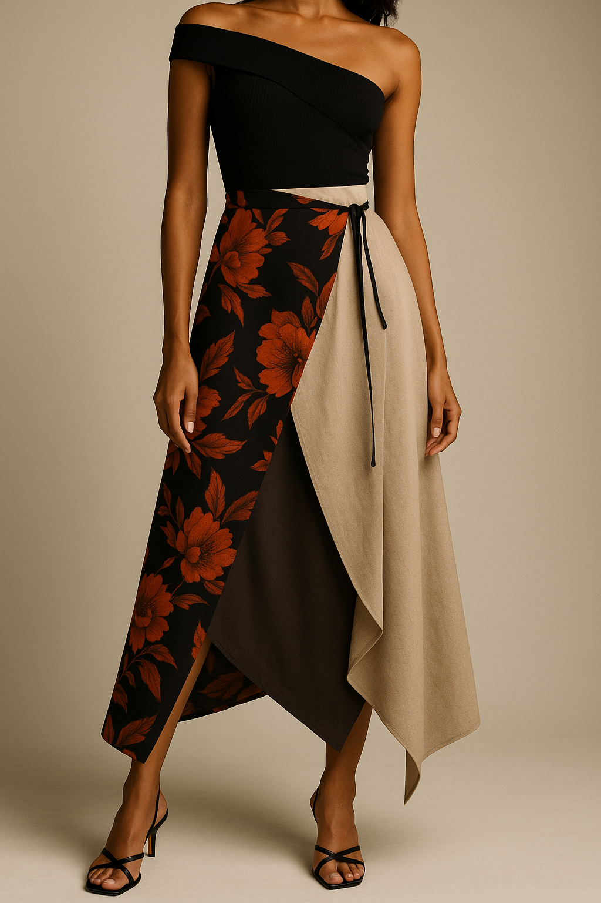

The Masquerade Collection
Each piece below is designed to transform. Read how every garment can shift from one look to another with a few simple changes.
The Midnight Dress

A classic black dress with a detachable skirt and removable sleeves. Wear it as:
- Full length gown for formal events.
- Knee-length dress for dinners or dates
- Detachable or changeable sleeves
The Masque Jacket

A structured jacket with hidden zippers along the sleeves and hem. In seconds, it becomes:
- A cropped jacket for high waisted looks
- A sleeveless vest for layering
- A full jacket for colder nights
The Two Face Skirt
A reversible wrap skirt with two contrasting fabrics. Flip, twist, and re-wrap to reveal:
- A bold patterned side for statement outfits
- A solid neutral side for minimal looks
- Asymmetrical drapes for a more dramatic style